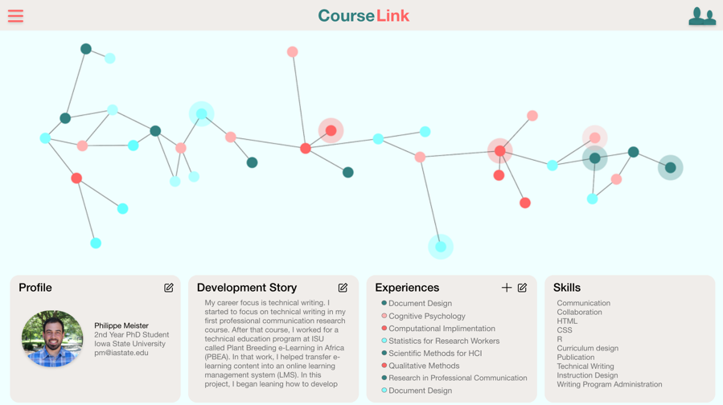

Courselink
Research and design by Philippe Meister
Summary
Courselink is an educational product that helps students build and demonstrate their knoweldge, skills, and abilities as they copmplete formal education. I was awarded a CyStarters Grant ($6,500 over 3 months) to develop this product. The product develpment process included competitive analysis, iterative design cycles with user reserach and prototyping, and business modeling. Work has not continued past 2019 because I am focused on my gradute work (see Augmented Reality Weather Training).
Introduction
How do students transition from their education into a career? Some students are in professional degrees that lend themselves to this transition. But some, like humanities students, may struggle to make this transition. There are numerous educational products and services marketed toward schools that support learning. There are other products and services marketed towards career services that support students in finding jobs. There is a lack of products and services that help students develop themselves profesionally while in school.
Approach
Couselink helps students document their knowledge, skills, and abilities as they go through college in ways that them shape their future path.
Courselink is a cloud-based educational software that supports the developmental network approach to academic and career advising. Courselink presents a visual network interface that encourages students to develop a "networked" understanding of their professional development and identity.
A students inputs their experiences, which are visualized as a nodes in a network. They connect experinces (nodes) to other experiences (nodes) in ways that form meaningful relationships between experiences. The process is similar to developing a portfolio, but with a visual interface that asks the student to make connections between experiences. For example, a studnet may create a network that begins with their first college experience and leads directly into a desired job advertisement. The work of develpoing their network path to that job advertisement helps them achieve that goal.

User Research
I conducted formative design reserach with relevant stakeholders for the univeristy setting including acadademic advisors, career services professionals, students, and recruiters.
Reserach Questions
Reserach questions varied with each group of participants. For example, the research questions for advisors were: RQ1: How do academic advisors use their software while advising students? RQ2: How do academic advisors respond to the proposed software interface for student development (Courselink)?
Participants
Advisors and career service professionals were identified through college-level lists of academic advisors at the university. Students and recruiters were identified through a snowball sample where I contacted a few trusted members of the group and had them recommend others in that category.
Interview Protocol
The interview protocol had questions about the participants current practices and their reactions to a proposed interface. The interview protocol includes sections for introduction, topic-specific, technology-specific, product opportunity, product reaction, and closing. There are 1-4 interview questions within each of the sections.
Analysis
After transcribing the interviews, I read the transcriptions to immerse myself in the data (Tracy, 189). Next, I identified recurrent codes and noted themes that appear within each code (Tracy, 189). Then I synthesized my notes to generate codes and recurrent themes.
Results Summary
The interviews helped me see the cracks in how students engage with career services at the university. Focusing on the students, they are not prepared to make good use of career services. A reoccuring pattern is that students come in to career services in their third year when they look for internships or their fourth year when they look for jobs. Students and career centers need to spend time reflecting on the previous three years and identifying the students relevant strengths.
Prototype 2
The formative user reserach informed the next deisgn iteration (version 2). Version 2 focused on helping students track their experinces through the first three years of college. Version 2 allowed students to import courses from from their university’s learning management system to improve the usability of the system. After the courses are imported, users can describe the knowledge, skills, and abilities they associate with the experience and upload artifacts of their work. Additionally, users can add other types of experiences, such as work experiences. They system aggregates and visualizes the experinces for users. Users can then user their experinces to find new experinces. They can browse job listings and compare their current knoweldge, skills, and abilites to the job listing.
Future Work
The project needs software developers to work on the technical architecture. The sofware can be implimented and tested in a pilot setting. First, we can evaluate for whether the process helps students develop a "networked" understanding of their professional development and identity and compare our process against other software such as eportfolios. Then, we can evaluate whether our process and algorithms for helping students find new experines needs against competitiors (e.g., job sites). Future work on this poroject could involve more high-level university stakeholders, who could see this as an opportunity to add value to the student experince at their university.